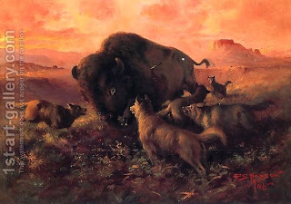

Chullin 38 - Signs of Vitality
How do we know that an animal that is close to death is allowed to be eaten altogether? Since the Torah said " This is the animal ("chaya" meaning a live creature) that you may eat ", then perhaps an animal that is close its death you may not eat?
No! That's can't be, because the Torah also said, " Do not eat nevelah, an animal that died by itself " which means that all the time that it is alive, you may slaughter and eat it. But perhaps nevelah and close to death are the same thing!? Rather, since Ezekiel said in his prayer "I never ate terefah or nevelah," we understand that he never ate the meat of an animal that was close to death, though normally this is allowed - for otherwise, what would be his special praise?
What is considered an animal close to death? One that cannot rise even when prompted to. Even if it gnaws on hard foods, this is done only out of desperation and in an attempt to escape death. If it lows with low mooing sounds, releases waste or wiggles its ear - it is alive.
Art: Frank Johnson - The Wounded Buffalo